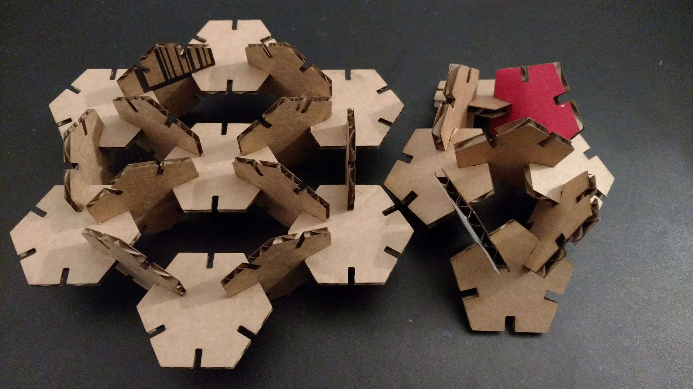
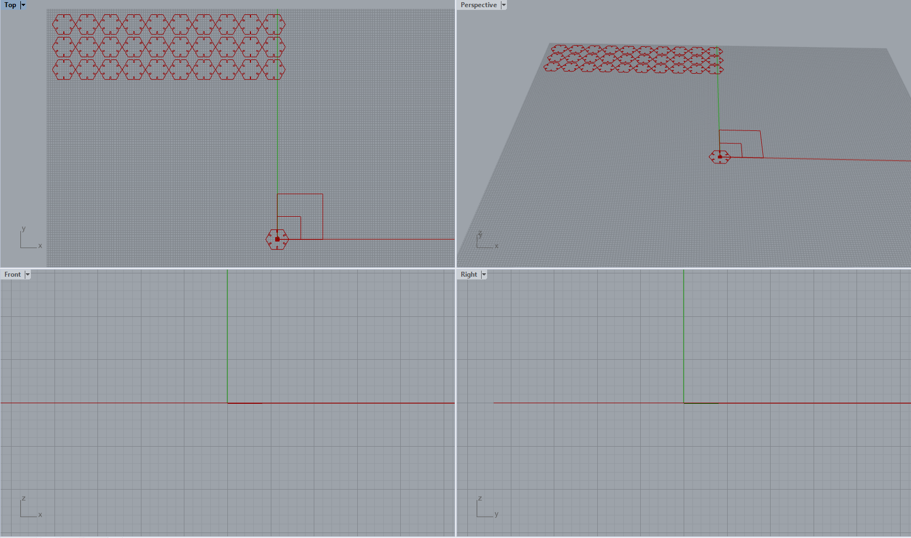
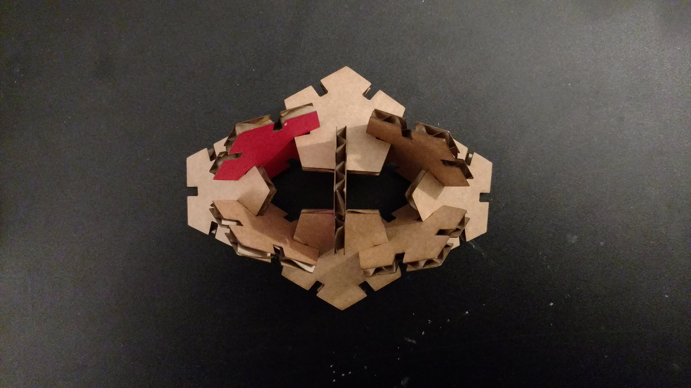

For this assignment, we were asked to create a press fit construction kit where the part geometry was created using a CAD software, specifically Rhino/Grasshopper. Additionally, the assignment required that the construction kit could be made from a material with at least 2 different thicknesses. Source files can be located within the github repository.
The general steps that I took in this assignment were:I already had regular polygons from the previous assignment which I planned on re-using as shapes. In order to minimize the amount of work that I had to perform manually in Rhino, I set out to create all of the geoemtry using Grasshoper. The steps for the pentagons and hexagons was essentially the same:
I obtained two different cardboard pieces and measured their thicknesses to be ~3.6mm and ~2.25mm. I decided to use the 3.6mm material with the pentagons and the 2.25mm material with the hexagons. I used the sliders in the grasshopper files to input these thickness values.
I used Grasshoper to bake the geometries that I had parametrically defined. After these geometries were displayed in Rhino, I saved the .3dm files that were generated. I also exported the completed geometries as .svgs and .dxfs to work with in Illustrator. The rectangle that I created for scaling was very helpful in resizing the geometry accurately within Illustrator, since the file opened up more than 32x larger than I expected. Even locking the proportions, Illustrator wasn't able to resize the entire drawing in one go, so I had to do multiple resizes, with unlocked proportions, but was able to resize the match my drawings thanks to the rectangle's known size. I set the vector stroke widths to 0.001in to ensure vector cuts using the Epilog printer.
Similar to the previous assignment, I checked out one of their laptops, along with a dongle so that the Epilog laser cutter could be connected to the laptop. I transferred my files to the laptop and opened them up in Illustrator, set the artboard size to match the laser cutter work area, performed the aforementioned size modification, and shifted the parts into a printable area. I then turned on the cutter, the exhaust, and the air assist to ensure that there would be no malfunctions with the printer. After the printer turned on, I adjusted the work area with my cardboard resting on it so that the laser head was focused, using a triangular tool to rest directly upon the cardboard. On the laptop, I entered the print dialog, selected the appropriate laser cutter from the possible printers, and entered its preferences, where I set the speed to 25%, power to 100%, and frequency to 100%. I also set the piece size to match the printer work area. At this point I lifted the hood of the laser cutter, and hit the print button twice on the laptop to send the job to the laser cutter. I ran the cutter with the hood up to see that the cuts were where I intended them to but, then cancelled the job and sent the commands through the laptop again, before lowering the hood and running the actual print job. After completing the cuts, I turned off the laser cutter and the air assist/exhaust and returned the laptop to the MILL staff.
I first tried to print using the exported .svgs, but the printer kept trying to rasterize the vectors. I switched to the .dxfs and didn't have any issues. I did notice that the time it took for these construction kits was longer than the previous assignment, likely because I chose to use fillets instead of chamfers (for simplicity in Grasshopper). I ran the construction kits sequentially, but my second cut was slightly out of focus, because the material was thicker. I adjusted the focus of the printer and ran the print job again and the pieces came out just fine.
Since the two construction kits had different thicknesses, they could not be attached to one another. Knowing what I knew about their angles and connections from the previous assignment, I knew it would be no issue to connect the regular polygonal construction kits in a repeating pattern to assemble a kit that would not shake apart easily. Although I cut fewer pieces than the previous assignment, I was still able to assemble some nicely symmetrical shapes using all of the pieces..
